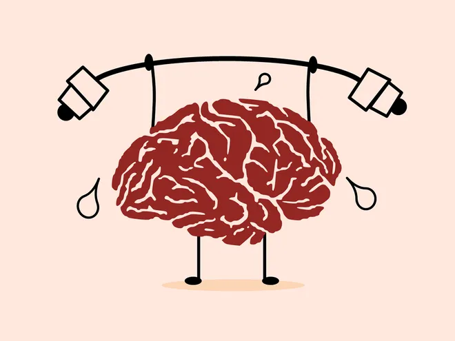
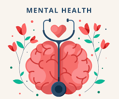
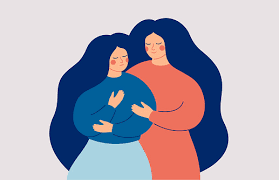
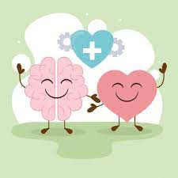

MindOkay Blog's
Not until we are lost do we begin to understand ourselves
MindOkay
MENTAL HEALTHBLOG
A Splintered Mind
May 12, 2023
If you struggle with keeping your thoughts in order, you likely will appreciate Douglas Cootey’s award-winning ADHD and depression blog. He’s been writing on his mental illness journey since 2005, something that he jokes about is amazing considering he has an attention deficit disorder. Humorous and honest, this is a good blog for anyone who needs to know they’re not alone or a good laugh.
“Sometimes I wonder if there’s a support group out there for adults with ADHD who have an open tabs addiction,” he writes in one post. “Hello, my name is Douglas Cootey, and I’m a hard-core tabs junkie.”
That isn’t to say his content is all about humor. In his latest blog post, he shares how useless well-meaning advice for depressed or suicidal people really is sometimes. A former bishop of his often changes the subject if he talks about his work or tells him he needs to stop letting his disability define him. “I’m sure he means well, but since I don’t recall him ever taking time to find out how my disability affected me in the first place, his advice is useless to me.”

The Real Warriors
April 23, 2023
This blog wants those in the military to know that asking for help isn’t a sign of weakness, it’s a sign of strength. The Real Warriors is a campaign to encourage active military and veterans to seek mental care and break down the stigma surrounding issues like depression and PTSD, especially in the military.
Their Personal Stories section is written by service members across all branches. Topics include advice on how to seek treatment, understanding trauma, and more. We especially appreciated this PSA video on overcoming the stigma around receiving mental health care.


My Brain’s Not Broken
April 17, 2023

Nathan started this blog in 2017 and hasn’t stopped writing about his journey ever since. He’s struggled with depression and mental illness since he was 19. After years of research, he made it his mission to create a place to share his story and hear from others.
Topics range from dealing with weather-induced mental health to the dangerous idea of “glamorizing” mental health. “I saw my depression as poetic, as necessary for my struggle. The more I lived with depression, the more I would be able to use this pain and do something noteworthy,” he writes. “We treat mental illness as something to overcome or a game to win. That creates an attitude that makes people feel like they need to ‘beat’ mental illness, but never to manage it.”


Looking after mental health - Tips and advice
Publish your story and share your experience with Mental Health. Read our submission guidelines and voluntarily submit your article to help others. Wellbeing.
Popular Posts
-

Mind
Mind’s goal is to inspire and inform anyone living with a mental illness as well as campaign for services. Their Mind Blog is based in the UK, but their topics are universal. -
Time to Change
Time to Change isn’t just about blogging. They are part of a social media campaign to reduce the stigma around mental health and encourage honest conversations. -
The Mighty
If you want to hear more stories from people facing the same mental health issues you do, the Mighty is a good place to start. -
Bipolar Bandit
Michelle Clark is no stranger to depression and bipolar disorder. She suffered for weeks at a time in high school without knowing why or what she was feeling.
Advertise
Tags
Mental Health Mental Health Awareness selflove Anxiety Therapy positivevibes Healthy Life Style Psychology Wellbeing Happiness Motivation Bipolar Mental Health Advocate Healing
Inspiration



Follow Us
Subscribe
Enter your e-mail below and get notified on the latest blog posts.